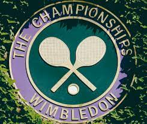

Australian Open
Es en Melbourne, el domingo, 12 de enero de 2025 al domingo, 26 de enero de 2025
Roland Garros
En Paris, entre el lunes 20 de mayo y el domingo, 9 de junio

Wimbledon
En la ciudad de Wimbledon, entre el lunes 23 de junio y el domingo 14 de julio

Us Open
En Flushing, el 26 de agosto y finalizará el día 8 de septiembre.